Splatformer Tutorial
A brief intro to the Splat ECS Game EngineSplat ECS is a free and Open Source game engine project with the goal of making it easy to build games which are native to the web. Splat ECS is 100% JavaScript and all the code you write to create your game is 100% real JavaScript and JSON. This tutorial will guide you through the basics of using Splat ECS and by the end we will have a simple game.
In this tutorial you will learn:- Splat ECS recommended workflow
- The ECS mindset for building data-driven games
- Keyboard controls
- Sprite animation
- Collision detection / resolution
- Drawing text to the screen
- Adding sounds
Splat ECS Starter Project
Getting startedClone the Splat ECS starter project
In your terminal:
git clone git@github.com:SplatJS/splat-ecs-starter-project.git
cd Splat ECS-starter-project
npm install
This will install all of the game's dependencies from NPM including the Splat ECS game engine - it can take a while.
Open package.json in your code editor of choice. change name to the name of your game (no caps or spaces)
edit "description" to describe your game
"repository" -> "url" to your github project url (if you have one)
"bugs" -> "url" to your github project url (if you have one)
"homepage" to your game project's website (if you have one)
change "author" to your name
change "license" to 'proprietary' unless you want your game to be free and open source.
Building your game
To get a feeling for the process we will use to publish our game navigate inside of the starter project in your terminal and run:
bash
npm run build
This is the build command that creates a fresh 'build' of your game which you can try in your browser or distribute on the web, once this command is run the only thing you need to play your game is the 'build' folder and its contents.
For example if you were submitting your game to itch.io you could zip and rename the build folder and upload that as your game.
Inside the build folder we have index.html, index.js, images, and sounds.
index.html - The main html page your game will be displayed on, this contains the canvas element where your game is displayed.
index.js - this is all of the code of your game, but it is also all the code for Splat ECS and all of its dependencies, This is a 'compiled' build version so everything is smashed into a single file.
images, sounds - where the assets your games uses live in the build folder.
Never edit anything in the build folder, this is the output of your game and the next time you run
npm run buildit will all be overwritten anyway.
The development process
The build is only for publishing your game and distributing it to others, you will never need to do anything in the build folder because we use webpack to run the game in the browser for testing.
Trying out the test project
To run a Splat ECS game all you need to do is type the command
npm startSplat ECS uses eslint to test your game code before each time you build it, this will prevent errors or straying from the recommended JavaScript formatting rules. When you build your game you may see errors or warnings, errors prevent the game from building and must be addressed before you can continue.
You should try running your game to make sure it is working before you continue. Open a browser and go to http://127.0.0.1:4000 or localhost:4000.
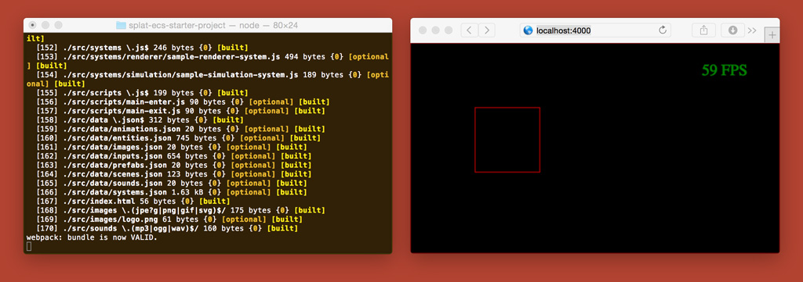The Splat ECS sample game is just a red-outlined square you can control with WASD, or arrow keys. Test that this is working and note that if the keys are not working you may need to click inside the browser window to give the game your 'focus'.
Now that we have a sample game running we can get started.
Understanding ECS
The foundational concepts behind Splat ECSSplat ECS uses an Entity Component system or ECS for short, as the name implies this is a very important part of Splat ECS. ECS is at the core and you will need to understand the ECS mindset while working on your game, but don't worry you will ease into it and it will begin to become clear to you why ECS was chosen, as it is a very powerful and organized design pattern.
Splat ECS basics
- All objects in the game that you can interact with should be entities
- The only way to modify an entity is to edit or delete it's components or add new components
- Systems run in the game loop (once per frame)
- Systems are where your JavaScript code will live, and there are two types Renderer and Simulation
Working on your game
Let's get into some code.
Everything you will ever edit in your game is inside the src/ folder.
lets examine the existing game code for the sample project.
If you remember there was a red outlined square and keyboard controls, how does that work?
Entities and their Components
Open src/data and you will notice several .json files, these are the core of your game because this is where we will store all of the game's data.
Players, enemies, items, backgrounds, animations, everything will be stored in data.
If you open up entities.json you will see an array of entities inside the '[]'
the entity we have listed is:
{
"id": 0,
"player": true,
"position": {
"x": 100,
"y": 100
},
"size": {
"width": 100,
"height": 100
},
"velocity": {
"x": 0,
"y": 0
}
}
Notice the id of 0, the "player" tag, the position, width, and height.
This is our red-outlined box from before, it is a rectangle that is 100x100 and it's top left corner is drawn at x 100 and y 100 on the screen. Everything in our game world is based on coordinates like a graph, the top left point is x:0, y:0 af you move right the x number increases, and as you move down the y number increases. The position, and size objects are what we call components in the ECS world, they can be added, edited, or deleted to make an entity have different properties and/or behaviours.
There is nothing in this code denoting that it is a rectangle, or that it is red-outlined, Splat ECS handles rendering of all entities for us, and by default there is a system called draw-rectangles that will outline each entity in red to let us know where they are. While this system is excellent for debugging, we will want to disable it once we get futher along.
Systems
So we have seen entities and components so far, what about systems? lets open up the systems folder and see what is inside. In the systems folder you will see two other folders named renderer, and simulation
These are the only two types of systems you will need in Splat ECS. renderer systems draw to the screen, and simulation systems do everything else.
Splat ECS uses the Common JS module format for all system modules you will be creating. Let's open the file src/systems/simulation/sample-simulation-system.js Inside this system we will see how we format our code in Splat ECS. Here you will see module.exports on line 3, this is the code to export the module for use by the game project and is vital that you wrap your code in this.
You will notice the arguments ecs and game, every chunk of system code in Splat ECS is run through the ECS so it must be included, game is everything in the data folder which becomes a large JavaScript object when the game is built.
This process might seem overwhelming but it will become easier with time.
So to get started lets add a sprite for our player!
Using images in Splat ECS
Sticky Baby lives!To start using images in splat it is as easy as adding them to the /src/images/ folder and then naming them in /src/data/images.json
First download the assets pack for this game here: Download splatformerassetspack.zip and unzip it, you will find two folders, images, and sounds.
Copy all of the images into your game /src/images/ then open up /src/data/images.json. Here you will find an empty JSON object {}, we need to add images so the game can know where they are, and so we can give them names. It might be easiest to add all of the images now, the JSON file should then look like this:
{
"player-idle":"images/player-idle.png",
"player-run-left":"images/player-run-left.png",
"player-run-right":"images/player-run-right.png",
"ground":"images/ground.png",
"platform":"images/platform.png",
"sky":"images/sky.png",
"goo":"images/goo.png"
}
First we should give the player an image, to do this we need to go into /src/data/entities.json.
Inside /src/data/entities.json you will see an array called "main: []" this refers to the main scene, in this tutorial we will only be working in one scene so all of our entities must be in "main", in future tutorials or in your own projects you can create as mani scenes as you want and each can have it's own set of entities.
Let's find player in the list on entities and add an image to it! To add a static image to an entity in Splat ECS you use the image component like this:
{
"id": 1,
"player": true,
"strokeStyle": "red",
"image":{
"name": "player-idle"
},
...
}
Now if you check your browser you should see the red-outlined box now has sticky baby inside it! But something looks wrong... Sticky baby's image is being stretched to the size of the player entity (100x100).
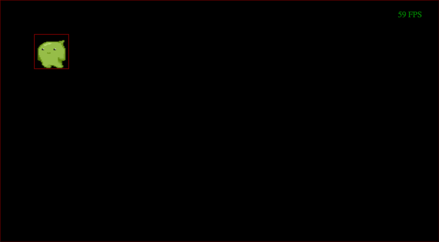Checkpoint 1
Sticky baby lives!By default images added to an entity will take on the position and size of the entity, to fix this we can change the size of the entity to match the image size, or add properties to the image component to make it a specific size. For this case we want to change the size of the player entity anyway so let's go ahead and do that like this:
{
"id": 1,
"player": true,
...
"size": {
"width": 32,
"height": 48
},
...
}
Now the player should be the correct size, and not stretched.
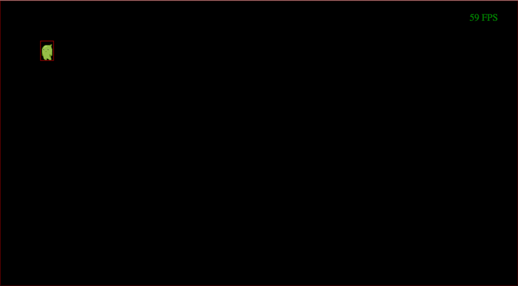
Checkpoint 2
Sizing things upKeeping the player on the screen
Knowing your boundariesThe next thing we will work on is keeping the player within the bounds of the screen. For our simple game we will always want the player to stay inside of a playable area of 800x600. To do this we need to make use of our first additional system. The system we need to add is called constrain-to-playable-area and it is part of Splat ECS engine so you can use it in any project.
Adding a new system
To add a new system we have to edit /src/data/systems.json, the trickiest thing about systems is ordering them, but we will get into that more later.
Systems come in two types: Renderer and Simulation.
Since constrain-to-playable-areahas to do with keeping an entity inside a rectangular area (using it's position and size) it is a Simulation system. Inside /src/data/systems.json you will see a JSON object with two named arrays inside:
{
"simulation": [...],
"renderer": [...]
}
Systems are regular JavaScript files and the references to them in /src/data/systems.json are normal file paths. The JSON for adding a system is as follows:
{
"name": "splat-ecs/libsystems/constrain-to-playable-area",
"scenes": [
"main"
]
}
"name" is the path to the system JavaScript file, if it a built in splat system it will begin with splat-ecs/libsystems/, if it your own system it will be either ./systems/simulation/your-system-here or ./systems/renderer/your-system-here.
So lets add the constrain-to-playable-area system reference after box-collider, here is what that will look like:
...
{
"name": "splat-ecs/libsystems/box-collider",
"scenes": [
"main"
]
},
{
"name": "splat-ecs/libsystems/constrain-to-playable-area",
"scenes": [
"main"
]
},
{
"name": "./systems/simulation/sample-simulation-system",
"scenes": [
"main"
]
}
...
There is one more thing we need to do to make constrain-to-playable-area work, that is tell it which entity to constrain, and what the size of the playable area is. To do this we need to revisit src/data/entities.json and add this to component and properties to the player:
"playableArea": {
"x": 0,
"y": 0,
"width": 800,
"height": 600
}
Check the game in the browser, now you should stop at an invisible wall when you hit the edges of the 800x600 rectangle.
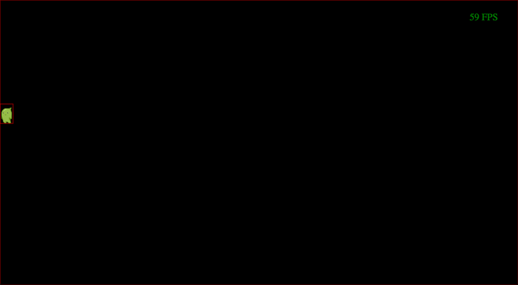
Checkpoint 3
Knowing your boundariesAdding a background
A change of sceneryIt is a bit hard to see where the playable area ends, so lets go ahead and add a simple background image to our game. This is really easy because Splat ECS handles all the drawing of entities with images for us. Le's add a new entity called "background" to src/data/entities.json and give it a unique id.
...
{
"id": 2,
"name": "background",
"position": {
"x": 0,
"y": 0
},
"size": {
"width": 800,
"height": 600
},
"image": {
"name": "sky"
}
}
...
Now we should see a stripey purple background for our game, just the way sticky baby likes it! Since the position and size are identical to the playableArea we set for the player entity, the player cannot move off the background image.
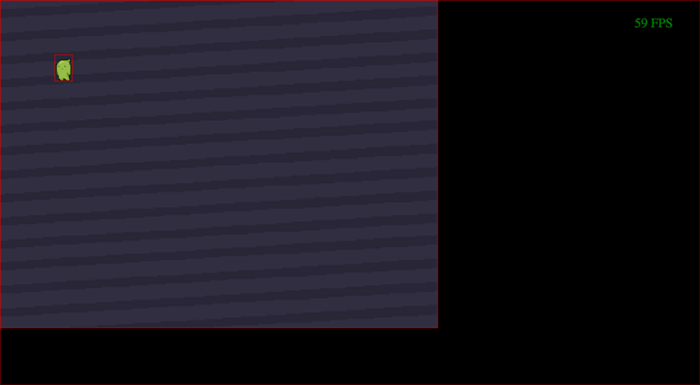
Checkpoint 4
A change of sceneryGravity
Weighing you downAnother staple of platformer games is gravity, in Splat ECS gravity is simply a force applied down on entities, this will be the first time we get to create our own system.
Before we add our system we need to set a gravity component on the player, we do this by adding:
"gravity": 0.02,
"velocity:{}" since it will effect the velocity.
Your player entity should now look like this:
{
"id": 1,
"player": true,
"strokeStyle": "red",
"image":{
"name": "player-idle"
},
"position": {
"x": 100,
"y": 100
},
"size": {
"width": 32,
"height": 48
},
"velocity": {
"x": 0,
"y": 0
},
"gravity": 0.02,
"playerController2d": {
"up": "up",
"down": "down",
"left": "left",
"right": "right"
},
"movement2d": {
"upMax": -0.5,
"downMax": 0.5,
"leftMax": -0.5,
"rightMax": 0.5,
"upAccel": -0.02,
"downAccel": 0.02,
"leftAccel": -0.02,
"rightAccel": 0.02
},
"friction": {
"x": 0.97,
"y": 0.97
},
"playableArea": {
"x": 0,
"y": 0,
"width": 800,
"height": 600
}
}
Inside of src/systems/simulation there will be a file named sample-simulation-system.js open that file up in your editor, we are going to modify this to create a system that handles gravity.
Inside the src/systems/simulation/sample-simulation-system.js file you will notice the word "player" on line 5, this is letting the ECS know which entities to apply this system to, in this particular case it will apply your code to any entities with a component named "player".
The first step will be to change this, we want to apply this system to anything with a "gravity" component.
Inside the ecs.addEach function you will need to get the velocity of the entity, and it's gravity. The reason I am setting the value for gravity on the player entity is so we can tweak the gravity per entity later.
Lets add two variables inside our system, one to store the player's velocity, and one to store the player's gravity.
To get values out of the entity's components in Splat ECS we use the get method. Since everything in the entity pool has a unique ID, the ID is what we use to tell Splat ECS which entity we are looking for. Since the system is applying the code to each entity with a "gravity" component it acts a lot like a loop, the "entity" attribute on line 4 is the id of the current entity it is running on.
So let's go ahead and add those two variables with get:
var velocity = game.entities.get(entity, "velocity");
var gravity = game.entities.get(entity, "gravity");
Once we have those two variables we need to run some code that will apply gravity to the player entity's y velocity (since gravity is a downward force.)
The code we will use is:
velocity.y += gravity;
So here is what the entire file should look like:
"use strict";
module.exports = function(ecs, game) { // eslint-disable-line no-unused-vars
ecs.addEach(function(entity, elapsed) { // eslint-disable-line no-unused-vars
var velocity = game.entities.get(entity, "velocity");
var gravity = game.entities.get(entity, "gravity");
velocity.y += gravity;
}, "gravity");
};
Now save the file and let's rename it to gravity.js. Since we changed the name of the system, you guessed it - we need to change the reference in src/data/systems.json
Before:
{
"name": "./systems/simulation/sample-simulation-system",
"scenes": [
"main"
]
}
{
"name": "./systems/simulation/gravity",
"scenes": [
"main"
]
}
Now check the game in your browser, if everything was done correctly the player should fall out of the sky and land on the bottom of the screen, you can still of course move left and right.
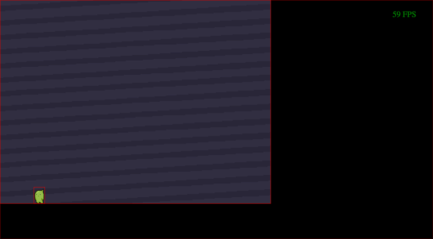
Checkpoint 5
Weighing you downJumping
A leap of faithTo add jumping we will first need to add a jump button in the game's list for usable inputs. Splat ECS uses virtual buttons so you can name a button "action" or "jump" or whatever you like and assign as many keyboard keys to it as you like.
Adding a new input
To add a new input you will need to edit src/data/inputs.json inside the file you will see inputs for the up, down, right, and left buttons. We can add a jump button at the bottom by adding this before the closing bracket:
"jump": {
"type": "button",
"inputs": [{
"device": "keyboard",
"key": "space"
}]
}
By changing "key" you can map jump to any keyboard key.
Now that we have added a new input we can create a new system for jumping. create a new file int he src/systems/simulation folder and name it jump.js
Here is the code for a very basic jumping system:
"use strict";
module.exports = function(ecs, game) { // eslint-disable-line no-unused-vars
ecs.addEach(function jump(entity, elapsed) { // eslint-disable-line no-unused-vars
var velocity = game.entities.get(entity, "velocity");
if (game.input.buttonPressed("jump")) {
velocity.y = -1.2;
}
}, "player");
};
Similar to how the gravity system we created earlier looked for entities with the "gravity" component, you can see the ecs.addEach function is looking for entities with the "player" component.
Inside the function we are making a variable for the player's velocity on like 5, and then on like 7 we are checking if the "jump" button is pressed.
There are 3 different game.input methods we can use,
- game.input.button("name-here") true if button is currently down (each frame).
- game.input.buttonPressed("name-here") true for one frame at the beginning of the button press.
- game.input.buttonDown("name-here")true for one frame when the button is released.
The reason I chose buttonPressed is because it will only jump once when the button is first pressed instead of continually jumping.
Inside the if block where we are checking the button is this bit of code:
velocity.y = -1.2;
The reason we are setting the velocity y (up/down axis) to -1.2 is so the player will go up, gravity will take care of bringing the play back down to earth and the whole process happens again the next time the jump button is pressed.
Next we need to register this system in src/data/systems.json inside the "simulation": [] array because it is a simulation system. We can add it using the following:
{
"name": "./systems/simulation/jump",
"scenes": [
"main"
]
}
I recommend adding it before control-player.
We also need to adjust the vertical friction (to disable it actually). To do this we need to set the player entity's friction y to 1:
"friction": {
"x": 0.97,
"y": 1
}
Now when you view your game in the browser your player will be able to jump when space is pressed. You will probably notice that if you continue to jump you can jump in mid-air, we will fix this later. Now for the element that makes this game a platformer more than anything... platforms!
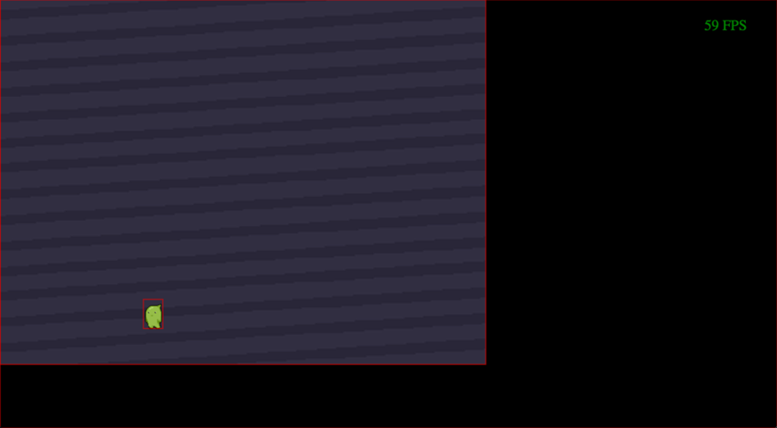
Checkpoint 6
A leap of faithAdding platforms
A firm foundationLet's start by adding ground, we can do this simply by creating a new entity.
Let's add this entity to src/data/entities.json:
{
"id": 4,
"platform": true,
"position": {
"x": 0,
"y": 536
},
"size": {
"width": 800,
"height": 64
},
"collisions": [],
"image":{
"name":"ground"
}
}
When you check your game in the browser, you will notice that the player falls right through the ground, that's because we do not have any code in place to handle collisions - or more importantly the resolution of collisions.
Collision resolution
- This is code you specify to do something only when two entities are colliding. The collision resolution we want for our game is for the player to be pushed back one pixel if the player enters any of the game's platforms. Pushing the player away by one pixel will keep the player "standing" on top of the platform entity.
To resolve collisions we need two new systems, track-last-position and resolve-collisions, both of which we will need to add manually to our project.
track-last-position runs each frame on every entity with a position and records it in a component called "lastPosition". This is important for know what position to restore the entity to after it intersects another.
To add the track-last-position system we need to create a new file in src/systems/simulation/ named track-last-position.js, the contents of this file should be:
"use strict";
module.exports = function(ecs, data) { // eslint-disable-line no-unused-vars
ecs.addEach(function trackLastPosition(entity, elapsed) { // eslint-disable-line no-unused-vars
var position = data.entities.get(entity, "position");
data.entities.set(entity, "lastPosition", { x: position.x, y: position.y });
}, "position");
};
We will also need to register this system in src/data/systems.json, I recommend adding it right before match-canvas-size in the "simulation":[] array.
{
"name": "./systems/simulation/track-last-position",
"scenes": [
"main"
]
}
Every time you add a new system you should check to make sure everything is working, so go ahead and look at the game in your browser and make sure everything is working. Nothing should have changed yet, but just be sure there are no new typos or bugs.
Next we need to do the same for resolve-collisions, create a new file in src/systems/simulation/ named resolve-collisions.js, the contents of this file should be:
"use strict";
function wasLeft(entityLastPosition, entitySize, otherPosition) {
return entityLastPosition.x + entitySize.width <= otherPosition.x;
}
function wasRight(entityLastPosition, otherPosition, otherSize) {
return entityLastPosition.x >= otherPosition.x + otherSize.width;
}
function wasAbove(entityLastPosition, entitySize, otherPosition) {
return entityLastPosition.y + entitySize.height <= otherPosition.y;
}
function wasBelow(entityLastPosition, otherPosition, otherSize) {
return entityLastPosition.y >= otherPosition.y + otherSize.height;
}
module.exports = function(ecs, data) { // eslint-disable-line no-unused-vars
data.entities.registerSearch("resolveCollisions", ["collisions","velocity","lastPosition","position"]);
ecs.addEach(function resolveCollisions(entity, elapsed) { // eslint-disable-line no-unused-vars
var entityCollisions = data.entities.get(entity, "collisions");
var entityPosition = data.entities.get(entity, "position");
var entitySize = data.entities.get(entity, "size");
var entityVelocity = data.entities.get(entity, "velocity");
var entityLastPosition = data.entities.get(entity, "lastPosition");
for (var i = 0; i < entityCollisions.length; i++) {
var other = entityCollisions[i];
var otherPosition = data.entities.get(other, "position");
var otherSize = data.entities.get(other, "size");
if (wasLeft(entityLastPosition, entitySize, otherPosition)) {
entityPosition.x = otherPosition.x - entitySize.width;
entityVelocity.x = 0;
}
if (wasRight(entityLastPosition, otherPosition, otherSize)) {
entityPosition.x = otherPosition.x + otherSize.width;
entityVelocity.x = 0;
}
if (wasAbove(entityLastPosition, entitySize, otherPosition)) {
entityPosition.y = otherPosition.y - entitySize.height;
entityVelocity.y = 0;
}
if (wasBelow(entityLastPosition, otherPosition, otherSize)) {
entityPosition.y = otherPosition.y + otherSize.height;
entityVelocity.y = 0;
}
}
}, "resolveCollisions");
};
This is a long one, TL;DR version of this is, if your player collides with another entity that has a "collisions" component the player will be pushed back one pixel in the appropriate direction.
Be sure to add this system to src/data/systems.json, I recommend adding it right after constrain-to-playable-area in the "simulation":[] array.
{
"name": "./systems/simulation/resolve-collisions",
"scenes": [
"main"
]
}
The last step is to add a collisions component to the player, we do this by adding the following to src/data/entities.json inside of the player entity:
"collisions":[]
Okay now we can go back to the browser and if everything was done correctly your player should fall and land on top of the ground entity, you can jump around and you should always land on the ground.
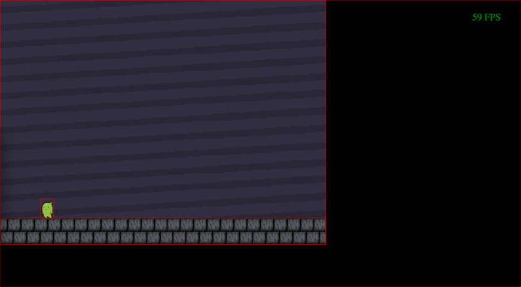
Checkpoint 7
A firm foundationAdding more platforms
Feeling jumpyThis part will be pretty easy now that we have systems in place to handle resoling our collisions, we can add platforms wherever we want and they will just work.
To start lets add another platform in src/data/entities.json like so:
{
"id": 5,
"platform": true,
"position": {
"x": 0,
"y": 250
},
"size": {
"width": 396,
"height": 32
},
"collisions": [],
"image":{
"name":"platform"
}
}
Be sure the ids of any platforms you add are unique, and add another:
{
"id":6,
"platform": true,
"position": {
"x": 400,
"y": 400
},
"size": {
"width": 396,
"height": 32
},
"collisions": [],
"image":{
"name":"platform"
}
}
You should recognize what each of the components in these platform entities is doing by now, but here is a quick recap:
- id - A unique number for each entity, the engine reads this to keep track of each entity
- platform - This is so we can later write systems that target only "platforms" which is just a name we made up for these. This just acts as a tag, and you can make up any tags like this with any name you desire.
- position - This is the position of the top left of the entity to let Splat ECS know where to draw it.
- size - The width and height of the entity, this is it's collision are as well, the size of the object the player will bump into.
- collisions - Anything that you need to track collisions on will need this component, it has an array of the ids of all other entities it is currently intersecting.
- image : name - The image to draw on the entity.
So now if you play the game in your browser you will be able to jump onto the other platforms! You might notice that the jumping in the game acts a bit weird, you can continue to jump over and over and there is no way to stop sticky baby from jumping in mid-air!
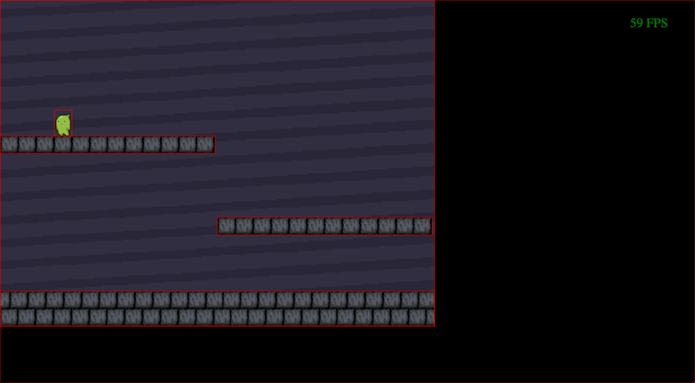
Checkpoint 8
Feeling jumpyFixing jumping
Following the rulesTo fix this we need to edit the src//systems/simulation/jump.js system a bit, and now that we have platforms it makes since to only let the player jump if the player is standing on top of a platform. Here is the code we use to add that feature and how the system should look after it is added:
"use strict";
module.exports = function(ecs, game) { // eslint-disable-line no-unused-vars
ecs.addEach(function jump(entity, elapsed) { // eslint-disable-line no-unused-vars
var velocity = game.entities.get(entity, "velocity");
if (game.input.buttonPressed("jump")) {
var entityCollisions = game.entities.get(entity, "collisions");
for (var i = 0; i < entityCollisions.length; i++) {
var other = entityCollisions[i];
if (game.entities.get(other, "platform")) {
var otherPosition = game.entities.get(other, "position");
var position = game.entities.get(entity, "position");
var size = game.entities.get(entity, "size");
if ((position.y + size.height) <= otherPosition.y) {
velocity.y = -1.2;
}
}
}
}
}, "player");
};
This is a bit complicated - so let's break it down step-by-step.
- We are adding a variable called
entityCollisionsso we can loop over all of the other entities the player is currently touching. - Each time this loop runs it is create a new variable called
otherwhich contains the current entity that the player is touching. - The next bit of code (inside the 'if' statement) only runs if the
otherentity has a"platform"component. - Next we are then creating variables for the platform's position, and the player's current size and position.
- if the player's top plus height (player's bottom) is less than or equal to the top of the platform the player is standing on top of it.
- Let that sucker jump!
So to recap - if the player is touching a platform we are checking to see if the player is above the platform, and if it is, sticky baby can jump!
Now it is starting to feel like a real game, lets add something else that real games have - animation!
Checkpoint 9
Following the rulesAnimation
Motion to add emotionSplat ECS has built in support for sprite animation and if you setup your artwork to work with the default format it can be super easy to get animated sprites working quickly.
The first animations we will add will be for the player. Sticky baby can currently move left and right but the image stays the same. Let's fix that.
To add animations we must edit **src/data/animations.json**. Let's add the idle, left, and right running animations now. Below is the format for filmstrip-formatted spritesheets:
"player-idle": [{
"filmstripFrames": 1,
"time": 1,
"properties": {
"image": {
"name": "player-idle",
"sourceX": 0,
"sourceY": 0,
"sourceWidth": 32,
"sourceHeight": 48
}
}
}],
"player-run-left": [{
"filmstripFrames": 4,
"time": 150,
"properties": {
"image": {
"name": "player-run-left",
"sourceX": 0,
"sourceY": 0,
"sourceWidth": 128,
"sourceHeight": 48
}
}
}],
"player-run-right": [{
"filmstripFrames": 4,
"time": 150,
"properties": {
"image": {
"name": "player-run-right",
"sourceX": 0,
"sourceY": 0,
"sourceWidth": 128,
"sourceHeight": 48
}
}
}]
So what does all this data do? Let's go through it one piece at a time:
- key - This is the name we want to give to the animation, often best to make it the same as the image name the animation uses, in our example: player-run-right
- filmstripFrames - this lets the engine know how to chop up the spritesheet, it will use the width of the image and devide it by the number of frames to create individual images to cycle through.
- time - The time in milliseconds that each frame will last, use this to adjust the speed of the animation.
- properties - image
- name - Image file to use in our example: player-run-right.
- sourceX - Point to start the first frame, usually 0.
- sourceY - Point to start the first frame, usually 0.
- sourceWidth - The width of the entire spritesheet.
- sourceHeight - The height of the entire spritesheet.
So now that we have animations defined, we need to use them.
To change the animations the player uses we will create a new system in the src/systems/simulation/ folder called run.js
The contents of this system should be as follows:
"use strict";
module.exports = function(ecs, game) { // eslint-disable-line no-unused-vars
ecs.addEach(function run(entity, elapsed) { // eslint-disable-line no-unused-vars
var animation = game.entities.get(entity, "animation");
if (game.input.button("left")) {
animation.name = "player-run-left";
} else if (game.input.button("right")) {
animation.name = "player-run-right";
} else {
animation.name = "player-idle";
}
}, "player");
};
The run system we created looks for any entities with "player" components and runs the following code on them each frame:
Create a variable for the animation component on the player.
if the left button is pressed, change the player's animation name to "player-run-left", else if the input named right is pressed switch to the animation named "player-run-right", and if neither of those are currently pressed return to the "player-idle" animation.
We now need to add this new system to src/data/systems.json, I recommend adding it right before box-collider in the "simulation":[] array.
{
"name": "./systems/simulation/run",
"scenes": [
"main"
]
}
Now we need to replace the "image" component on our player with an "animation" component like so:
"animation": {
"time": 0,
"frame": 0,
"loop": true,
"speed": 1,
"name": "player-idle"
}
Now test out the game in the browser and sticky baby should be able to run around in style!
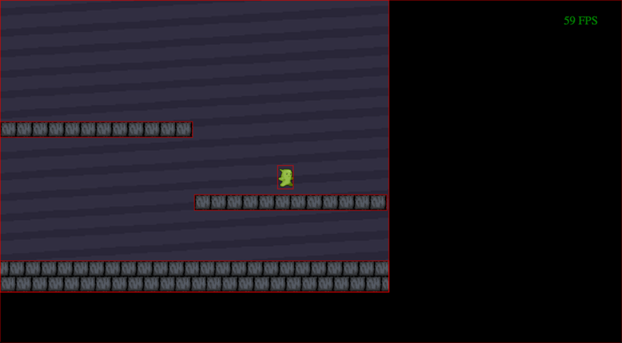Checkpoint 10
Motion to add emotionPickups!
Feeling prefabulousThe sticky baby needs to collect balls of goo to remain sticky, so lets get some goo in the game.
So we want to be able to add lots of items for the player to pick up, and in this tutorial they will all use the same an animation. In Splat ECS there is a great feature designed to help with situations just like this, and it's called prefabs.
Before we get into the magic of prefabs, let's add a new animation to src/data/animations.json for our goo balls.
"goo": [{
"filmstripFrames": 5,
"time": 600,
"properties": {
"image": {
"name": "goo",
"sourceX": 0,
"sourceY": 0,
"sourceWidth": 50,
"sourceHeight": 12
}
}
}]
Adding a new prefab
Prefabs are reusable entities, think of them as a mold for stamping out a bunch of the same exact entity. To add a new prefab we add an entity to src/data/prefabs.json the same way we would add an entity to src/data/entities.json. Since prefabs are a template for creating a new entity we don't need to create a unique id for them, Splat ECS will handle that for us. The other difference is that prefabs is not an array of entities, it is an object containing key-value pairs where the key is the name you want to give the prefab, and the value is an entity object.
Here is the JSON we need for the collectable goo entities
"goo": {
"goo": true,
"position": {
"x": 0,
"y": 0
},
"size": {
"width": 13,
"height": 18
},
"velocity": {
"x": 0,
"y": 0
},
"collisions": [],
"animation":{
"time": 0,
"frame": 0,
"loop": true,
"speed": 1,
"name": "goo"
},
"image": {
"name": "goo",
"destinationWidth": 13,
"destinationHeight": 13
},
"gravity": 0.001
}
Now we need code to place the prefabs in our game, to do that we will use something new to us. We want the goo entities to be created once at the beginning of the game, but simulation and renderer systems run each frame, so that will not work - instead to create the goo entities once, when you ever the main scene of the game we will use a script called main-enter.
Enter and exit scripts
Each scene can have code that runs at the beginning and end of it, these are stored in the **src/scripts/** folder and are named `scenename-enter.js` and `scenename-exit.js`(where 'scenename' is replaced with the name of the actual scene).
The sample project already has src/scripts/main-enter.js created for us, so we just need to modify it. Inside of the module.exports = function we will add code that will add new entities based on the prefab we created - to do this we will use their game.instantiatePrefab method.
game.instantiatePrefab takes a single parameter that is the key name of the prefab we created as a string, for example in our case "goo". It does two main things when called: 1. Creates a new entity and adds it to the entity pool. 2. Returns the id of the new entity. (it automatically assigns it a unique id for you)
"use strict";
module.exports = function(game) { // eslint-disable-line no-unused-vars
for (var i = 0; i < 12; i++) {
var goo = game.instantiatePrefab("goo");
game.entities.set(goo, "position", {
"x": i * 70,
"y": -13
});
}
};
The code above creates a variable called "goo", and stores the returned value of game.instantiatePrefab("goo") (the new entity id).
The next line game.entities.set will give the brand new entity it's own position, in our case we are setting them to all be 70 pixels apart, and to spawn above the screen (0, the top of the screen minus the height of the goo entity).
Those two lines are wrapped in a for loop that runs the code inside 12 times.
When we revisit the game in the browser we should see 12 balls of goo fall from the sky and land on the ground directly under where they spawned.
You should notice that this process seemed much easier than when we started out, these prefabs all already have thier own animation, gravity component with a set value, and collisions component, so the systems we already have in place to handle gravity and collisions for the player effect these as well, pretty cool right!?
But don't stop just yet - we still need to let sticky baby collect the goo, right now they just act like more platforms! To do this we need to add another simulation system, let's call this one collect-go.js
Create a new file inside of src/systems/simulation/ and name it collect-go.js, the contents of the file should be as follows:
"use strict";
module.exports = function(ecs, game) { // eslint-disable-line no-unused-vars
ecs.addEach(function collectGoo(entity, elapsed) { // eslint-disable-line no-unused-vars
var entityCollisions = game.entities.get(entity, "collisions");
for (var i = 0; i < entityCollisions.length; i++) {
var other = entityCollisions[i];
if (game.entities.get(other, "goo")) {
game.entities.destroy(other);
}
}
}, "player");
};
The code looks for any entity with a "player" component and does the following:
- Creates a variable for the player's collisions array,
- Loops over all current collisions the player entity is experiencing
- Checks to see if any of the other entities player is colliding with have a
"goo"component, and if they do it destroys them.
We now need to add this new system to src/data/systems.json, I recommend adding it right after resolve-collisions at the end of the "simulation":[] array.
{
"name": "./systems/simulation/collect-goo",
"scenes": [
"main"
]
}

Checkpoint 11
Feeling prefabulousKeeping score
Competitive gamingWe are almost done, we have a pretty real feeling game now, but I want to show you one more thing, rendering text on the screen, and to do this we will add a score counter.
This will be our first and only render system necessary for the tutorial. Lets delete the src/systems/renderer/sample-renderer-system.js and add a new file inside of src/systems/renderer/, let's name it draw-score.js
The contents of draw-score.js should be as follows:
"use strict";
module.exports = function(ecs, game) { // eslint-disable-line no-unused-vars
ecs.addEach(function harvest(entity, context) { // eslint-disable-line no-unused-vars
var score = game.entities.get(entity, "score");
context.fillStyle = "#fff";
context.font = "bold 26px arial";
context.fillText("Goo: " + score, 16, 35);
} ,"player");
};
This code will run one per frame for each entity with the "player" component, which should be familiar by now, but there is one main difference that rendering systems have - they draw things to the screen or context.
To draw the score we want to draw normal text to the screen and to do this we can use normal html5 canvas functions. I will explain each line staring with var score
- Create a variable for the player's
"score"component (which we will add after) - Set the color of the text, in our case #fff for white.
- Set the font to bold 26px arial.
- Draw the text "Goo:" to the screen followed by the number of the player's current score at the position x:16, y:35.
We now - you guessed it - need to add this new system to src/data/systems.json, I recommend adding it right before draw-frame-rate in the "renderer":[] array this time.
{
"name": "./systems/renderer/draw-score",
"scenes": [
"main"
]
}
Also while you have this file open, remove this sample system reference:
{
"name": "./systems/renderer/sample-renderer-system",
"scenes": [
"main"
]
}
Now we need to give the player a "score" component, and add a way to increase the score.
Let's start by adding this to our player entity in src/data/entities.json:
"score": 0,
This component starts the player with 0 score and will serve as the place for us to store the score as it increases.
Next we need to pick the event that will increase the score, this should be the moment when the goo entity the player touches is destroyed.
Open up src/systems/simulation/collect-goo.js again and let's add a few lines:
Here is how the file will look after we add two lines, one to get the "score" component of the player entity, and one to add 1 to it each time the player grabs a ball of goo.
"use strict";
module.exports = function(ecs, game) { // eslint-disable-line no-unused-vars
ecs.addEach(function collectGoo(entity, elapsed) { // eslint-disable-line no-unused-vars
var entityCollisions = game.entities.get(entity, "collisions");
var score = game.entities.get(entity, "score");
for (var i = 0; i < entityCollisions.length; i++) {
var other = entityCollisions[i];
if (game.entities.get(other, "goo")) {
game.entities.destroy(other);
game.entities.set(entity, "score", score + 1);
}
}
}, "player");
};
Now if you try out the game in your browser you should be able to run around and collect all 12 balls of goo.
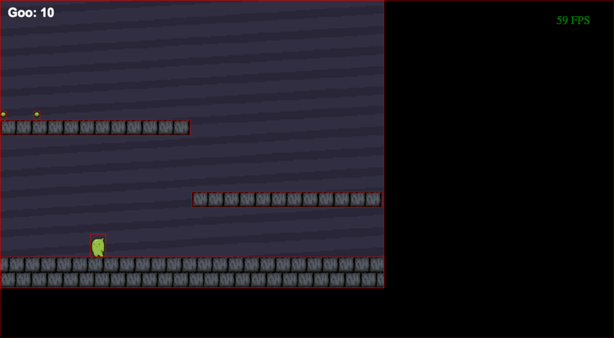
Checkpoint 12
Competitive gamingSound
Hearing is believingSound is a huge boost to your game and adds a ton of feeling and depth to what you see and do on the screen. Sound is really easy to add in Splat ECS, but that does not mean sound is easy in games, it can often take a lot of effort to create the right sound effects, ambience, and music to make your creation feel just right.
To start lets add a couple of sound effects I created with BFXR to src/sounds/ in your game project, you can find them in the assets pack that the images were in.
We need to add and name sounds we wish to use in the game to the src/data/sounds.json file like so:
{
"jump": "sounds/jump.mp3",
"pickup": "sounds/pickup.mp3"
}
Now that sounds are available for us to use in the game it is an easy one-liner to add them in
game.sounds.play("jump");
The first sound would work well in the jump system src/systems/simulation/jump.js.
Here is what that system looks like with the sound added:
"use strict";
module.exports = function(ecs, game) { // eslint-disable-line no-unused-vars
ecs.addEach(function jump(entity, elapsed) { // eslint-disable-line no-unused-vars
var velocity = game.entities.get(entity, "velocity");
if (game.input.buttonPressed("jump")) {
var entityCollisions = game.entities.get(entity, "collisions");
for (var i = 0; i < entityCollisions.length; i++) {
var other = entityCollisions[i];
if (game.entities.get(other, "platform")) {
var otherPosition = game.entities.get(other, "position");
var position = game.entities.get(entity, "position");
var size = game.entities.get(entity, "size");
if ((position.y + size.height) <= otherPosition.y) {
game.sounds.play("jump");
velocity.y = -1.2;
}
}
}
}
}, "player");
};
Now we should add a sound when sticky baby picks up a ball of goo, we can do this in src/systems/simulation/collect-goo.js:
here is the collect-goo system with the added sound:
"use strict";
module.exports = function(ecs, game) { // eslint-disable-line no-unused-vars
ecs.addEach(function collectGoo(entity, elapsed) { // eslint-disable-line no-unused-vars
var entityCollisions = game.entities.get(entity, "collisions");
var score = game.entities.get(entity, "score");
for (var i = 0; i < entityCollisions.length; i++) {
var other = entityCollisions[i];
if (game.entities.get(other, "goo")) {
game.sounds.play("pickup");
game.entities.destroy(other);
game.entities.set(entity, "score", score + 1);
}
}
}, "player");
};
And now when you play the game in your browser check to see if the sounds are working, and if they are congratulate yourself for completing this tutorial, and creating what might be your first of many games with Splat ECS!
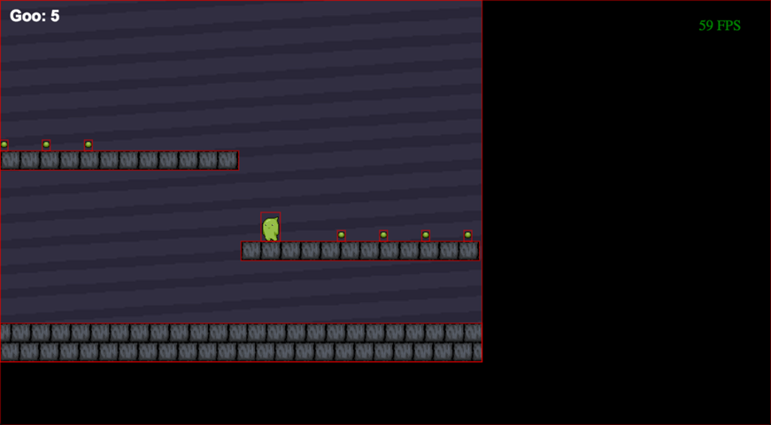
Checkpoint 13
Hearing is believingAdjusting the aspect ratio
Making things presentableYou will notice that our game is stuck up in the top left corner of a full-screen black canvas. We want the game to scale depending ont he browser window size so that the whole game is always in view (not cut off) and the artwork is always the correct aspect ratio.
To do this we need to add another reference to a built in Splat ECS system called match-center to src/data/systems.json.
src/data/systems.json
{
"name": "splat-ecs/lib/systems/match-center",
"scenes": [
"main"
]
}
match-center lets you add a matchCenter component to any entity and provide it the id of any other entity. The system will center the entity whose id you provide on the first entity. In our case we are going to add the matchCenter componet to our camera entity, and tell id 2, or the background image to center on it. We also need to add another component to the camera called matchCanvasSize this will make our 800 x 600 game scale to the size of the browser window without getting cut off, sicne we are not drawing anything outside of the 800x600 area the game will effectively have letterboxing on the right and left sides.
src/data/entities.json inside the camera entity
"matchCanvasSize": true,
"matchCenter": {
"id": 2
}
Nex we need to add one line to src/scripts/main-enter.js, this is a special method that will tell Splat ECS the size we want our game to be. src/scripts/main-enter.js
"use strict";
module.exports = function(game) { // eslint-disable-line no-unused-vars
game.scaleCanvasToFitRectangle(800,600);
for (var i = 0; i < 12; i++) {
var goo = game.instantiatePrefab("goo");
game.entities.set(goo, "position", {
"x": i * 70,
"y": -13
});
}
};

Checkpoint 14
Making things presentableRemoving debugging systems
The finished productRemoving the red outlines around entities is as simple as deleting these lines in src/data/systems.json:
{
"name": "splat-ecs/lib/systems/draw-rectangles",
"scenes": [
"main"
]
}
Now we just need to remove the frame rate display:
{
"name": "splat-ecs/lib/systems/draw-frame-rate",
"scenes": [
"main"
]
}
Now when you check the game in your browser the red outlines and fps display should be gone, leaving behind your great looking game. You have completed the tutorial, great job!
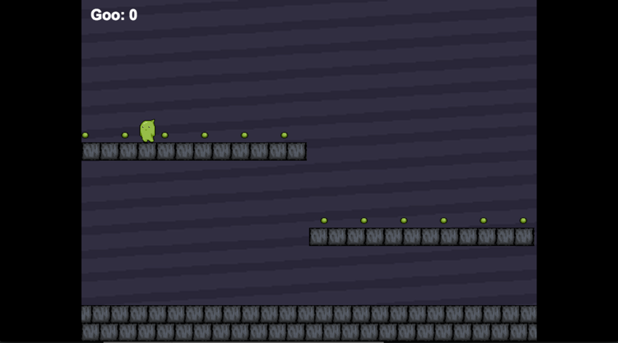
Checkpoint 15
The finished productThanks again for trying out Splat ECS and remember this is an open source community drive project, so feel free to help us with bug reports, fixes, or new features! The github project lives at: Splat ECS github.